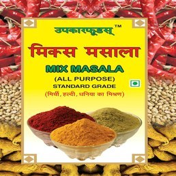
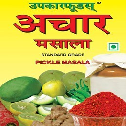
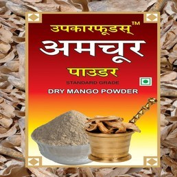
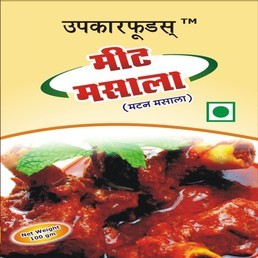

-

Upkar Foods Mix Masala
Upkar Foods Mix Masala is an exclusive Upkar Foods product. It is a unique mixture of Red chilli powder, Turmeric powder and coriander powder. These 3 ingredients are combined together in an appropriate ratio to provide that perfect taste to Indian curries. Just use this powder to add flavours and taste to curries instead of using red chilli, turmeric and coriander powder seperately.
Available in
200g
500g -

Upkar Foods Pickle Masala
Upkar Foods Pickle Masala or achaar masala is a magical mix of multiple spices to make a highly appetizing and mouth-watering menu of pickles.We can make all the pickles like mango, lime and tender mango with this pickle powder. It gives a good colour and taste to the pickle and it also balances all ingredients with the correct proposition.
Available in
200g -

Upkar Foods Amchur Powder
Upkar Foods Amchur Powder or mango powder is a fruity spice powder made from dried unripe green mangoes and is used as a citrusy seasoning. It is used to flavor foods and add the nutritional benefits of mangoes when the fresh fruit is out of season.
Available in
100g -

Upkar Foods Mutton Masala
Upkar Foods Mutton Masala or meat masala is a multi-spice based blend that imparts a dark tan and a hot taste to non-veg dishes, especially meat. Since Indians love their meat really spiced up, a fair amount of flavouring spices lend this blend an aromatic chorus.
Available in
50g
100g